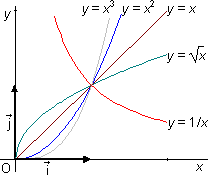

tfontanet.free.fr
tfontanet.free.fr

Manuel utilisé en classe : Déclic 2de (Hachette, Edition 2019).

 Comment travailler efficacement en mathématiques
Comment travailler efficacement en mathématiques
Aplusix web : Faire des exercices  ( Mode d'emploi)
( Mode d'emploi)
Tous les documents ci-dessus sont publiés sous licence GFDL (Copyleft)
: Vous pouvez donc les redistribuer ou les modifier, ils sont là pour ça !